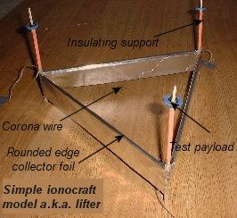

Ionic Wind
A new concept design in electronics cooling exploits ionic wind, or, more formally, a corona discharge, to improve the efficiency of traditional cooling fans. The same effect is also able to propel a levitation device called an ionocraft, and was also incorporated in an air purifier.
 Plasma Lamp: Showing blue/violet flares similar to corona dischargeLicense: CC BY 2.5, Luc Viatour
Plasma Lamp: Showing blue/violet flares similar to corona dischargeLicense: CC BY 2.5, Luc Viatour
A corona discharge occurs between electrodes with a high potential (kV to MV) electric field in a fluid such as air. The high potential ionizes the fluid (adds or strips electrons from fluid atoms/molecules) to produce a plasma. The ions in the plasma are repelled from the electrode they originated from and attracted to the electrode with the lower relative potential. If the potential is high enough, a complete conductive spark or arc will result, as seen in a lightning strike.
To enhance the corona discharge, 2 specially shaped electrodes are needed; one with high curvature such as a needle or thin wire; the other with low curvature such as a flat plate or the ground. Plasma forms around the high curvature electrode and moves toward the low curvature electrode. The movement of the plasma causes ions to collide with the neutral fluid molecules, causing a jet like effect directed toward the low curvature electrode. The plasma around the high curvature electrode glows with a faint blue/violet glow, known by sailors who observed the effect on the ends of a ship's masts during thunderstorms as St. Elmo's Fire.
The new electronics cooling concept design enhances the cooling effect of a fan by using corona discharge to induce additional convective cooling through the motion of neutral air molecules.
The same jet like movement of air molecules exploited by the new cooling concept can also be orientated to counter the effect of gravity to produce a levitation device with no moving parts – an ionocraft, or more precisely an Electro-Hydro-Dynamic (EHD) thruster or lifter. While this propulsion effect in air sounds like science fiction, it is well known and dates back to a 1709 description by Francis Hauksbee in the book Physico-Mechanical Experiments on Various Subjects. The simplicity of such thrusters makes them an ideal homebrew construction project consisting of:
- wire
- aluminum foil
- balsa wood
- high voltage DC supply
IonocraftCourtesy of Xavier Borg - Blaze Labs Research
A side effect of corona discharge in air is the production of ozone and NOx, both harmful pollutants to human and animal respiratory systems. So it seems ill-advised to incorporate corona discharge in an air purifier – yet that is exactly what occurred in the case of a device called the Ionic Breeze. Using negative ions that collided with airborne pollutants such as dust and smoke particles, the Ionic Breeze claimed to purify air by subsequently depositing the particles on a positively charged surface. While the efficiency of the device was disputed, even if it worked as advertised it was replacing one form of pollutant (dust and smoke) with more potent ones.
Clearly corona discharge is an interesting phenomenon with a wide range of applications. Who knows – maybe the electronics cooling application will inspire a new generation to apply latter day Computer-Aided Engineering (CAE) tools and advanced materials to spawn other novel applications. I'm still holding out for an affordable personal jetpack.
Feedback
Questions? Ideas? Problems?

Recent blog posts
- CFD Simulates Distant Past
- Background on the Caedium v6.0 Release
- Long-Necked Dinosaurs Succumb To CFD
- CFD Provides Insight Into Mystery Fossils
- Wind Turbine Design According to Insects
- Runners Discover Drafting
- Wind Tunnel and CFD Reveal Best Cycling Tuck
- Active Aerodynamics on the Lamborghini Huracán Performante
- Fluidic Logic
- Stonehenge Vortex Revealed as April Fools' Day Distortion Field
 Get our Blog feed
Get our Blog feed
Comments
Ionocraft in Flight
Here's a video of an ionocraft in flight. Erroneously the clip is titled Electrogravitic Propulsion – it is really a demonstration of corona discharge which is an aerodynamic effect.
MAV Magnetohydrodynamic Device
New Scientist is reporting a patent application for a flying saucer shaped Micro Air Vehicle (MAV) that uses ionic propulsion.